Personal Projects
Operation Cambodia Education
At 14-years-old I ventured to Cambodia for the first time with my family. This first trip was what ignited my desire to give back, particularly to issues that affect women and girls around the world. Right when I got back I wrote hundreds of letters and made presentations throughout my community to raise money to build a school in Cambodia. In 2011, I officially opened "Valerie Quirk's School of Hope." This experience was the impetus for many more projects you will see below, and a life very devoted to doing what I can to make this world better.
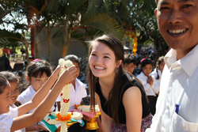
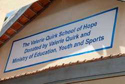
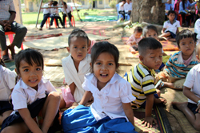
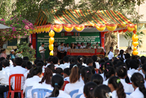
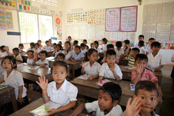
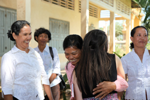
Girls 4 Good
When I returned from Cambodia, I also started the organization "Girls 4 Good." Girls 4 Good is an organization devoted to raising the global cognizance of young people, local engagement, and global action. Each week our chapters have conversations about issues that affect women and girls around the world, work on projects that benefit their local communities, and foster relationships with our global partners. Read below to learn more about one of our global partners.
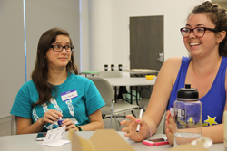
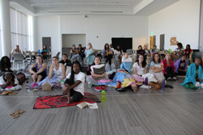
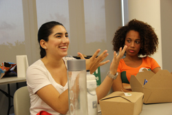
The Buchanan Institute Girls' High School (BIGHS)| Kerala, India
In 2010 I forged a relationship with BIGHS and asked what Girls 4 Good could do for them. We found out that BIGHS was serving over 1,000 girls meals everyday out of two pots on the side of a building, and they also had no place to eat their food. Girls 4 Good worked one year to raise money and raise awareness about global girls' education. In 2012 a cafeteria was built for BIGHS fully funded by Girls 4 Good.
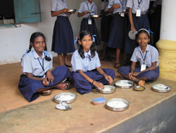
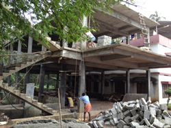
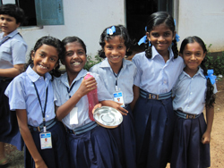
FACE IT Interactive Photo Exhibit
In 2013 Girls 4 Good teamed up with the University of Miami's SPARK chapter to create "FACE IT." FACE IT is inspired by Steve Rosenfield's "WHAT I BE" project. This year photographers Emily Robbins and Mariana Espindola helped us produce FACE IT's photographs. FACE IT seeks to understand and challenge the way men and women on campus see themselves. FACE IT challenges our personal insecurities by taking them head on. Participants also bring in a partner that picks a word that best describes them - we hope that this can demonstrate how differently we tend to see ourselves compared to the way our loved ones see us. During this bi-annual exhibit, guests are allowed to interact with the photos by leaving comments on post-it notes for each of the participants. To learn more and see more photos from past events please visit our Facebook Page.
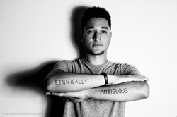
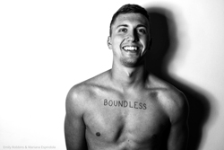
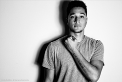